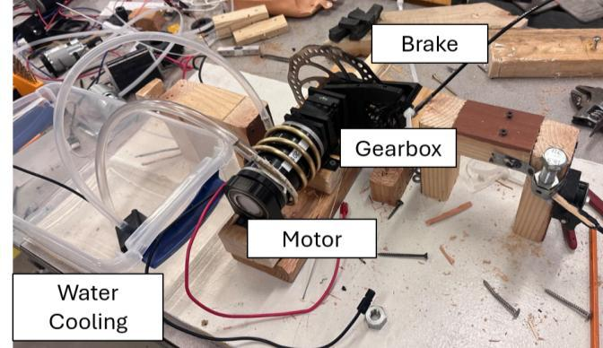
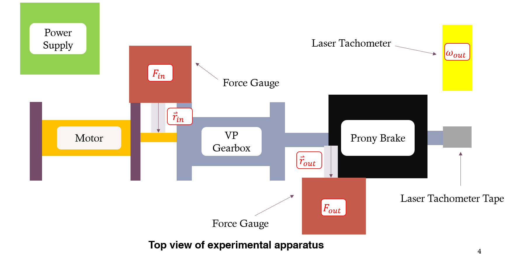
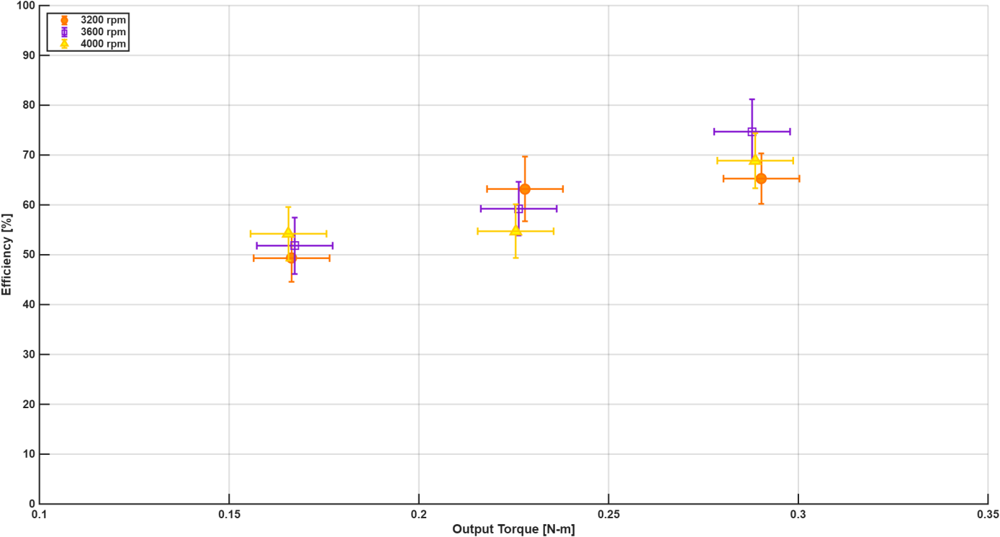

Experimental design & testing
Planetary gearbox efficiency test rig
Building an experiment to measure power transmission and understand its measurement limits.
- Timeline
- Dec 2025 — Feb 2026
- Context
- Experimental design & testing
- Tools & methods
Team: Jacob Cockerill, Andrew Fong, Shaun Yamamoto, Onur Dorduncu

Overview
Our four-person team designed and built an apparatus to characterize the steady-state efficiency of a 4:1 Versa Planetary gearbox. The project connected fixture design, instrumentation, and physical testing, with a target of keeping calculated relative uncertainty below 15% across the selected operating range.
Measuring torque through reaction forces
A MiniCIM motor drove the gearbox while a bicycle rotor and caliper acted as a Prony brake. Force gauges measured reactions through lever arms at the motor and brake. Starting from mechanical power as torque times angular speed, we derived an efficiency equation using these forces, measured arm lengths, and the fixed 4:1 reduction. A laser tachometer monitored output speed.
The fixtures included features for measuring the lever arms consistently. Instrument ranges and the expected measurement uncertainty informed the test conditions.
Running the test matrix
We tested input speeds of 3,200, 3,600, and 4,000 rpm at output torques of 0.16, 0.22, and 0.28 N·m. Each combination was repeated five times. Between trials, the motor stopped and the force gauges were zeroed; voltage and brake pressure were then adjusted to reach the next condition.
Results and measurement limits
Measured efficiencies ranged from about 49% to 75% and increased between the lowest and highest loads at each tested speed. The effect of speed remained inconclusive because uncertainty bounds overlapped. Reported relative uncertainties were approximately 7.8–10.9%, meeting the project’s 15% target.
The absolute efficiency values require caution. Cooling coils attached to the motor may have resisted its reaction motion, inflating the input force reading and lowering the calculated efficiency. That possible apparatus bias was not resolved by the reported uncertainty calculation.
What the experiment established
The rig provided a working basis for repeated gearbox testing and highlighted where the apparatus could influence the result. Separating cooling forces from torque measurement and improving shaft alignment would be priorities before extending the efficiency map.
Project details

Open full-size figure

Open full-size figure